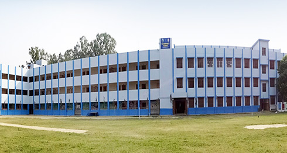
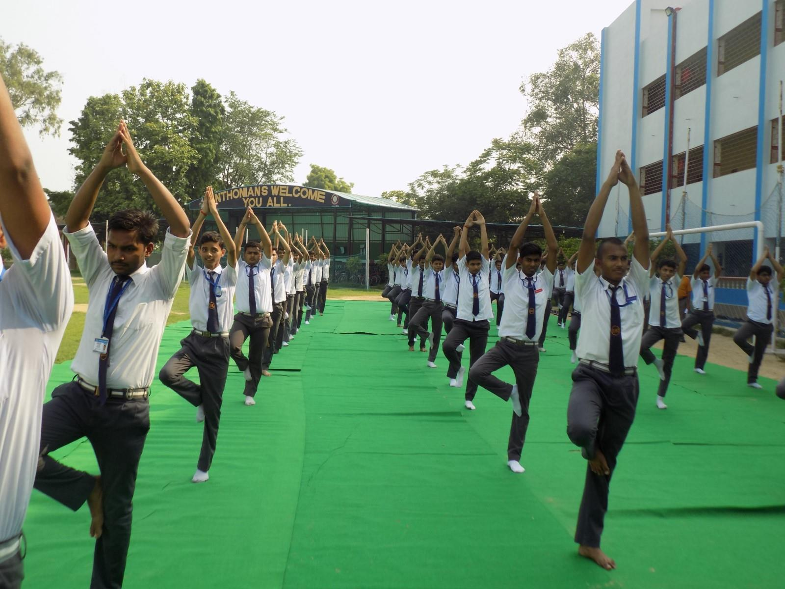

|
|
| Home | About | Academics | Contact |
|
St. Anthony's Senior Secondary School is a minority educational institution in Barabanki,
Uttar Pradesh, India, founded in 1979 and run by the Catholic Diocese of Lucknow.
Classes from nursery to intermediate (i.e. XII) are conducted under the 10+2 pattern of education.
|
 |
|
St. Anthony's Junior College, Agra for girls, was established in 1845 by the Religious of Jesus & Mary.
It bears testimony to excellence in academics and in co-curricular activities, along with imparting values which St.
Claudine Thevenet, the Foundress of the Congregation expected of girls. Anthonians have proved their mettle now and again by attaining the coveted rank of “National Topper” at the I.S.C. Examinations and also in Shooting in National and International events. The School has excelled in Basketball too with many emerging national players. |
 | ||
| View Our Images Gallery Here | |||
| In the Campus | Important Links | About Us | |
|---|---|---|---|
|
St. Anthony's School is an unaided English Medium Educational lnstitution founded in 1977 with the object of imparting value-based education to both boys and girls. Affiliated to C.B.S.E., it has emerged as a premier school of Barabanki district. It has achieved its present status by the dedicated work of many able priests and religious nuns belonging to the Sacred Heart Congregation of the Patna Region. |
Quick Links |
Extra Features
|
Mobile App Use URL www.sabcampuscare.in
Use URL www.sabcampuscare.in |